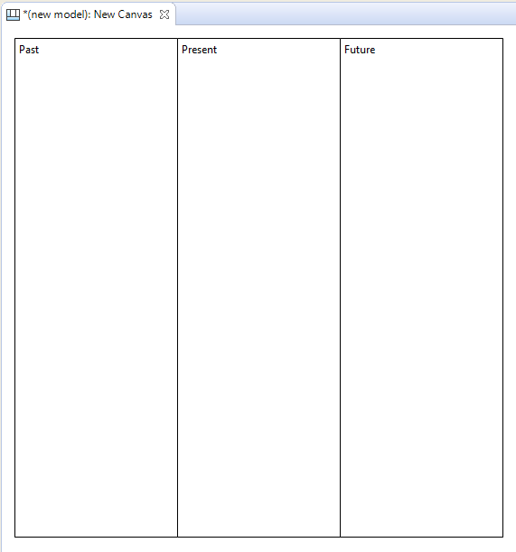
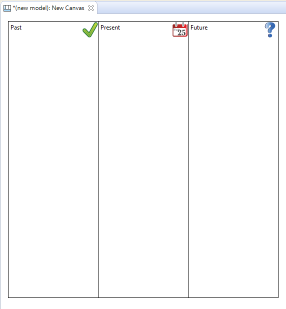

当“我的图像”图像管理器对话框窗口打开时，选择“从文件打开...”选项并从计算机的文件系统中选择合适的图像。对其他块执行相同的操作。


构成画布的主要组件和概念有块、便利贴、图像、连接、提示和锁定。画布模板通常由许多（锁定的）块和图像组成，用户可以在这些块和图像上添加便利贴、图像、连接和其他块（如果需要）。以下各节将从画布调色板的描述和构建虚拟画布的示例开始，详细描述这些概念。
使用画布时，调色板会向您提供创建这些对象所需的工具。
画布调色板
在调色板中选择一个工具并将其绘制到画布上。 彩色方块代表“便利贴”。 请注意，您不限于提供的颜色，因为您可以在 属性窗口 中更改便利贴的颜色。 与提供的连接类似，您可以在其 属性窗口中更改连接的线条和箭头样式.
让我们通过绘制过去、现在和未来的概念来构建我们自己的画布的过程。
假设您在模型树中选择了一个模型，请执行以下步骤：
添加提示和锁定
最后，让我们为块添加一些提示，然后锁定它们，以便我们可以将画布重新用作模板。 为什么我们要向块添加提示？ 好吧，与Archi模型中的其他对象一样，提供一个向最终用户建议对象的意图以及如何在模型中使用它的量规非常有帮助。 让我们添加提示：
现在我们已经创建了块，添加了图像，提供了提示并锁定了对象，我们可以将整个东西保存为画布模板，然后从模板创建画布的新实例。请参阅“将画布另存为模板”部分和
“从模板创建新画布”来执行此操作。
从模板创建一个新的画布实例意味着我们现在可以开始真正使用它了：

我们想象中的画布
有关更多想法，请查看内置画布模板的构建方式以获取更多示例。请参阅“从模板创建新画布”部分。
 Archi 对“*.archimate”文件使用不同的文件格式添加图像时。
Archi 对“*.archimate”文件使用不同的文件格式添加图像时。
通常Archi将“*.archimate”文件保存为单个纯文本XML格式文件。但是，当使用图像时，使用的文件格式是二进制存档文件（zip格式），其中包含模型的XML文件和图像文件。这是为了将所有相关文件放在一起。